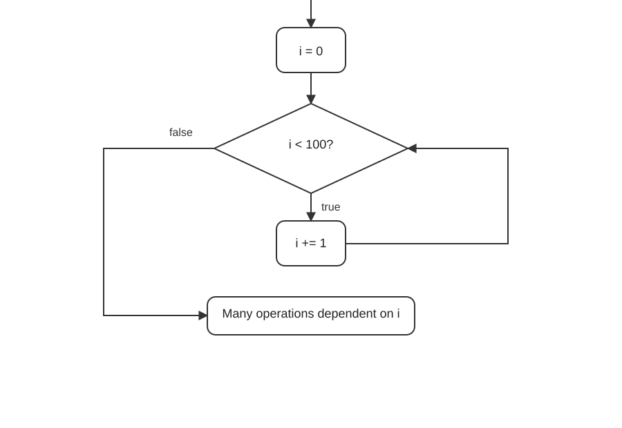

Unbounded Static Analysis
Run until nothing changes. Last week the analysis stopped after $n$ rounds, so it could only speak about short runs. This week it keeps going until the abstract state stops growing, which covers runs of every length. That needs three things: precise values that remember how variables depend on each other, fixed points with a guarantee that we reach them, and a fast way to get there.
Dependent values
Dependent values
The copy and the original were the same number
You photocopy your passport, check the copy for the expiry date ("still valid"), and throw the copy away. At the airport you look at the real passport and realise you never wrote down that it was valid. The copy and the original were the same document, but you treated them as two unrelated things.
A naive analysis makes exactly this mistake. The JVM compares a copy of a variable on the stack, and the analysis forgets that the copy and the variable hold the same number.
@Case("(0) -> ok")
@Case("(1) -> ok")
public static int safeDivByN(int n) {
if (n != 0) {
return 1 / n;
}
return 0;
}The method is safe: the division only runs when $n \neq 0$. The naive sign analysis from Week 5 (with no refinement at all) says otherwise. The table shows the abstract state right before each instruction and where the result goes, as in the notes:
| Offset | Instruction | Abstract state |
|---|---|---|
| 000 | load:I 0 | $\langle \{0 \mapsto \{+,-,0\}\}, \epsilon, 0 \rangle \to \{1\}$ |
| 001 | ifz eq 6 | $\langle \{0 \mapsto \{+,-,0\}\}, \{+,-,0\}, 1 \rangle \to \{2, 6\}$ |
| 002 | push:I 1 | $\langle \{0 \mapsto \{+,-,0\}\}, \epsilon, 2 \rangle \to \{3\}$ |
| 003 | load:I 0 | $\langle \{0 \mapsto \{+,-,0\}\}, \{+\}, 3 \rangle \to \{4\}$ |
| 004 | binary:I div | $\langle \{0 \mapsto \{+,-,0\}\}, \{+\}\{+,-,0\}, 4 \rangle \to \{5, \err(\text{divide by zero})\}$ |
| 005 | return:I | $\langle \{0 \mapsto \{+,-,0\}\}, \{+,-\}, 5 \rangle \to \{\ok\}$ |
| 006 | push:I 0 | $\langle \{0 \mapsto \{+,-,0\}\}, \epsilon, 6 \rangle \to \{7\}$ |
| 007 | return:I | $\langle \{0 \mapsto \{+,-,0\}\}, \{0\}, 7 \rangle \to \{\ok\}$ |
- At 000 the value of $n$ is copied onto the stack. At 001
ifz eq 6pops that copy and branches. - On the fall-through branch the copy was non-zero, but the copy is gone and the local $\lambda[0]$ still says $\{+,-,0\}$.
- At 003 the local is loaded again, with all three signs, so the division at 004 "may divide by zero": a false alarm.
- The problem is dependent values: values whose possible values constrain each other. Right after
load:I 0, the stack top and $\lambda[0]$ are always equal, but the analysis stores two independent sets.
Definition 6.1 Dependent values
Let $C$ be a set of concrete states and $x, y$ two value positions (locals or stack slots). Their joint values and their separate values are $$J = \{(s.x,\ s.y) \mid s \in C\}, \qquad X = \{s.x \mid s \in C\}, \qquad Y = \{s.y \mid s \in C\}.$$ Always $J \subseteq X \times Y$. The positions are dependent in $C$ when $J \subsetneq X \times Y$: some combination of possible values never occurs together.
"Two values are dependent if knowing one of them rules out some values of the other."
Proposition 6.2 Non-relational domains forget dependencies
A per-variable (non-relational) domain describes a pair by one abstract value per position, with $\gamma(a_x, a_y) = \gamma(a_x) \times \gamma(a_y)$. If $x$ and $y$ are dependent in $C$, then no abstract pair describes $C$ exactly: $\gamma(\alpha(C)) \supseteq X \times Y \supsetneq J$.
Proof
Any abstract pair whose concretisation contains $J$ must contain $X$ in its first and $Y$ in its second component (projections of $J$), so it contains the product $X \times Y$, which is strictly larger than $J$. ∎
Example. Right after load:I 0 in safeDivByN, with $C$ all states at offset 1: $J = \{(v, v) \mid v \in \Z\}$, the diagonal, while the sign analysis keeps $\{+,-,0\} \times \{+,-,0\}$. Refining the stack copy to $\{+,-\}$ therefore tells it nothing about $\lambda[0]$.
err('div by zero'); JPAMB's outcome name is divide by zero.Named values and constraints
Store a name instead of a copy
Instead of copying a number onto every sticky note, write a name on the notes ("n") and keep one notebook page with what you know about n: "n is not zero". Every note that says "n" sees the update at once, because there is only one page to update.
The notes add named values with constraints: the locals and the stack hold names, and a separate map says what each name may be. For safeDivByN:
| Offset | Instruction | Constraints / abstract state |
|---|---|---|
| 000 | load:I 0 | $\{n \mapsto \{+,-,0\}\} / \langle \{0 \mapsto n\}, \epsilon, 0 \rangle \to \{1\}$ |
| 001 | ifz eq 6 | $\{n \mapsto \{+,-,0\}\} / \langle \{0 \mapsto n\}, n, 1 \rangle \to \{2, 6\}$ |
| 002 | push:I 1 | $\{n \mapsto \{+,-\}\} / \langle \{0 \mapsto n\}, \epsilon, 2 \rangle \to \{3\}$ |
| 003 | load:I 0 | $\{n \mapsto \{+,-\}\} / \langle \{0 \mapsto n\}, \{+\}, 3 \rangle \to \{4\}$ |
| 004 | binary:I div | $\{n \mapsto \{+,-\}\} / \langle \{0 \mapsto n\}, \{+\}\,n, 4 \rangle \to \{5\}$ |
| 005 | return:I | $\{n \mapsto \{+,-\}\} / \langle \{0 \mapsto n\}, \{+,-\}, 5 \rangle \to \{\ok\}$ |
| 006 | push:I 0 | $\{n \mapsto \{0\}\} / \langle \{0 \mapsto n\}, \epsilon, 6 \rangle \to \{7\}$ |
| 007 | return:I | $\{n \mapsto \{0\}\} / \langle \{0 \mapsto n\}, \{0\}, 7 \rangle \to \{\ok\}$ |
At 001 the stack holds the name $n$, so the branch can refine $n$ itself: $\{+,-\}$ on the fall-through, $\{0\}$ on the jump. Each branch now carries its own constraint map, and the division sees the divisor $\{+,-\}$. The three rules of thumb from the notes:
- Names never change. If a local is overwritten, it gets a fresh name, so copies loaded earlier keep their old value.
- Be smart about creating and dropping names. Every name is one more thing to join and compare, and too many make the analysis slow.
- Know which instructions create dependencies:
loadanddupcopy a value,storecopies one into a local, and two reads of the same array element or field produce equal values.
A lighter variant only remembers which local a stack value was loaded from, so a test on the copy also narrows that local. That already fixes safeDivByN. It does not fix copyThenDivide (int y = x), where the dependency runs between two locals; real named values do, because store copies the name.
Definition 6.3 Named abstract state
Fix a set of names $N$ and a value abstraction $(\pset{\Z}, \subseteq) \galois (A, \sqsubseteq)$. A named abstract state is a pair $C / \langle \lambda, \sigma, \iota \rangle$ of a constraint map $C : N \to A$ and a frame whose locals and stack hold names, $\lambda : \N \rightharpoonup N$, $\sigma \in N^{*}$. Its meaning is $$\gamma\big(C / \langle \lambda, \sigma, \iota \rangle\big) = \big\{ \langle \nu \circ \lambda,\ \nu \circ \sigma,\ \iota \rangle \;\big|\; \nu : N \to \Z,\ \forall n \in N.\ \nu(n) \in \gamma(C(n)) \big\}.$$
"Pick one number for each name, within its constraint; replace every name by its number. Every way of doing that is a state described." A name used twice gets the same number in both places: that is how equality is remembered.
The transfer rules mostly move names around; only constants and arithmetic create new ones, and branches refine constraints:
"Loading pushes the local's name, not its value. Storing makes the local point to the popped name. A branch narrows the constraint of the compared name, which every place holding that name sees." push and binary push a fresh name $m$ with $C(m)$ set to the computed abstract value; an incr or a store of a computed value gives the local a fresh name.
Proposition 6.4 Refining a name is sound
If a concrete state $s \in \gamma(C/\langle \lambda, \sigma\,n, \iota\rangle)$ takes the jump of ifz c t, then the successor of $s$ lies in $\gamma(C[n \mapsto S']/\langle \lambda, \sigma, \iota \leftarrow t\rangle)$.
Proof
$s$ comes from some valuation $\nu$ with $\nu(n) \in \gamma(C(n))$, and the popped value is $\nu(n)$. The jump is taken, so $\nu(n) \mathrel{c} 0$, hence $\nu(n) \in \gamma(S')$ by soundness of $\mathit{refine}$ (Week 5, Proposition 5.53). The same $\nu$ satisfies the new constraint map, and the successor state is $\nu$ applied to the new frame. Every other occurrence of $n$ also has value $\nu(n)$, so refining all of them at once is correct. ∎
Dependencies between different values: relational domains
"b is bigger than a" is a fact about both
"Bob is taller than Alice" is a fact about two people. If you only keep one card per person with a height range, you cannot write it down: Alice's card says "somewhere between 1 and 2 metres", so does Bob's, and the comparison is lost. Later you learn Alice is at least 1.5 m, but you can no longer conclude anything about Bob.
Relational domains keep cards about pairs: "Bob minus Alice is at least 1 cm".
@Case("(0, 0) -> ok")
@Case("(1, 1) -> ok")
public static int safeDivAByB(int a, int b) {
if (a >= 0) {
if (b > a) {
return a / b;
}
}
return 0;
}- The notes say this is hard for our current techniques. That is true for the naive analysis. A sign analysis that refines both compared values proves it safe: when
b > ais tested, $a \in \{0, +\}$ already, and a number bigger than a non-negative one is positive, so $b \in \{+\}$. - Swap the two tests and every per-variable domain fails (
safeDivSwapped): whenb > ais tested both are unknown, so neither range shrinks; latera >= 0refines $a$ only. The fact $b - a \geq 1$ was never stored, so $b$ may still be 0. Order matters, and a relation is needed. - Octagons (Mine, 2006) store constraints of the form $\pm x \pm y \leq c$: bounds on each variable, on sums and on differences. After both tests: $b - a \geq 1$ and $a \geq 0$, so $b \geq 1$.
- Polyhedra (Cousot and Halbwachs, 1978) store arbitrary linear inequalities $\sum_i k_i x_i \leq c$. More precise, but the operations can be exponential.
- Costs, roughly: intervals $O(n)$ per operation; octagons $O(n^2)$ memory and $O(n^3)$ closure; polyhedra exponential in the worst case. In practice octagons are the usual compromise, and "most of the time faster" as the notes say.
Definition 6.5 Non-relational and relational domains
For variables $x_1, \ldots, x_n$, a non-relational domain is a product $A^n$ with $\gamma(a_1, \ldots, a_n) = \gamma(a_1) \times \cdots \times \gamma(a_n)$. A relational domain has elements whose concretisations are not products, so it can describe dependent values (Definition 6.1).
Definition 6.6 Octagons and polyhedra
An octagon is a finite set of constraints $\pm x_i \pm x_j \leq c$ (with $i = j$ allowed, giving $\pm 2x_i \leq c$, i.e. bounds); a polyhedron is a finite set of linear constraints $\sum_i k_i x_i \leq c$. Both mean the set of integer points satisfying all constraints: $$\gamma(P) = \{ v \in \Z^n \mid v \text{ satisfies every constraint in } P \}.$$
"An octagon may only compare two variables by their sum or difference; a polyhedron may use any linear combination."
Proposition 6.7 Expressiveness
Every interval box is an octagon (use only $\pm 2x_i \leq c$), and every octagon is a polyhedron. None of them can express a disequality $x \neq 0$ or a product $x \cdot y \geq 0$, because their concretisations are convex (in the integers: intersections of convex sets with $\Z^n$).
Worked example. In safeDivSwapped an octagon analysis computes $P_1 = \{a - b \leq -1\}$ after the first test and $P_2 = P_1 \cup \{-a \leq 0\}$ after the second. Closure (adding implied constraints) derives $-b = (a - b) + (-a) \leq -1 + 0$, so $b \geq 1$ and the division is safe. An interval analysis keeps $a \in [0, +\infty]$ and $b \in [-\infty, +\infty]$.
Fixed points
From bounded to unbounded
Iteration 1,000,001 might be the bad one
Last week we poured water into the maze for $n$ seconds and looked where it went. However long we wait, the trap could be one corridor further. Instead, keep pouring until the water level stops rising. From then on nothing new will ever be reached, so the map is complete, at every depth at once.
- A bounded analysis run for 1,000,000 iterations gives no guarantee about iteration 1,000,001 (Week 5, topic bounded).
- Unbounded static analysis keeps applying the abstract step $\Delta_A$ until it reaches a fixed point: a round that changes nothing.
- Because each round keeps what it had ($X \sqcup \Delta_A(X)$), a fixed point means $\Delta_A(X) \sqsubseteq X$: one more step of any described state lands inside $X$ again. By induction, $X$ then describes every state at every depth.
- Two things can go wrong. The rounds may never stop changing (infinite-height domains such as intervals, Part 3), and stepping every instruction every round is slow (Part 4).
- The payoff: if an error is not reached at the fixed point, it is reached by no trace of any length. That is a sound "no" for JPAMB.
Definition 6.8 Abstract iteration
Given a sound abstract step $\Delta_A$ (Week 5, Theorem 5.38), define $$X_0 = \alpha(I_p), \qquad X_{k+1} = X_k \sqcup \Delta_A(X_k).$$ The iteration has stabilised at $k$ if $X_{k+1} = X_k$.
Theorem 6.9 A stable iterate covers every depth
If $X_{k+1} = X_k$, then $\Delta^n \subseteq \gamma(X_k)$ for every $n \in \N$.
Proof
Week 5 showed $\Delta^n \subseteq \gamma(X_n)$ for every $n$. If $X_{k+1} = X_k$ then $X_{k+2} = X_{k+1} \sqcup \Delta_A(X_{k+1}) = X_k \sqcup \Delta_A(X_k) = X_{k+1}$, and by induction $X_n = X_k$ for all $n \geq k$. For $n \lt k$ we have $X_n \sqsubseteq X_k$ (the sequence is ascending) and $\gamma$ is monotone. So $\Delta^n \subseteq \gamma(X_n) \subseteq \gamma(X_k)$ for every $n$. ∎
Corollary 6.10 Unbounded not-may answers
If no state in $\gamma(X_k)$ is an error state $\err(m)$, then $p \models^{\must} \neg\,\err(m)$: no trace of any length ends in that error.
Fixed points, least fixed points and Kleene iteration
Press refresh until the page stops changing
A fixed point of a machine is an input that comes out unchanged. Start with the smallest possible input (nothing at all), feed the output back in, again and again. If the machine never shrinks things and there is a limit to how big things get, you must eventually hit an input that comes back unchanged, and it is the smallest such one.
- A fixed point of $f$ is an $x$ with $f(x) = x$. We want the least one: it contains only what is forced, so it gives the fewest false alarms.
- Kleene iteration computes it: $\bot,\ f(\bot),\ f(f(\bot)),\ \ldots$ until two consecutive values are equal. $f^n(\bot)$ means $f$ applied $n$ times.
- Why does this work? If $f$ is monotone (bigger in, bigger out), the iterates form an ascending chain $\bot \sqsubseteq f(\bot) \sqsubseteq f^2(\bot) \sqsubseteq \cdots$.
- The chain stops if the lattice has no infinite strictly ascending chains (the ascending chain condition), for example if it has finite height.
- The sign lattice $2^{\Sign}$ has height 3: its longest strict chain $\emptyset \subset \{0\} \subset \{0, +\} \subset \{-,0,+\}$ has 4 elements and 3 steps. So one sign value can grow at most 3 times, and a sign analysis always stops.
- Not every function has a fixed point you can reach this way: a non-monotone function can oscillate (try the complement in the lab).
Definition 6.11 Fixed points
Let $(A, \sqsubseteq)$ be a lattice and $f : A \to A$. Then $x$ is a fixed point if $f(x) = x$, a post-fixed point if $f(x) \sqsubseteq x$, and a pre-fixed point if $x \sqsubseteq f(x)$. The least fixed point $\operatorname{lfp} f$ is a fixed point below every other fixed point.
Definition 6.12 Monotone and extensive
$f$ is monotone if $a \sqsubseteq b \implies f(a) \sqsubseteq f(b)$, and extensive (inflationary) if $a \sqsubseteq f(a)$ for all $a$.
Theorem 6.13 Knaster-Tarski
A monotone $f$ on a complete lattice has a least fixed point, $$\operatorname{lfp} f = \mathop{\Large\sqcap} \{ x \mid f(x) \sqsubseteq x \}.$$
"The least fixed point is the meet of all post-fixed points."
Proof
Let $P$ be the set of post-fixed points and $m = \mathop{\Large\sqcap} P$. For $x \in P$: $m \sqsubseteq x$, so $f(m) \sqsubseteq f(x) \sqsubseteq x$. Thus $f(m)$ is a lower bound of $P$, hence $f(m) \sqsubseteq m$: $m$ is itself post-fixed. Applying $f$ again, $f(f(m)) \sqsubseteq f(m)$, so $f(m) \in P$ and $m \sqsubseteq f(m)$. Together $f(m) = m$. Every fixed point is post-fixed, so $m$ lies below all of them. ∎
Theorem 6.14 Kleene iteration under the ascending chain condition
Let $f$ be monotone on a lattice with a least element $\bot$ and no infinite strictly ascending chains. Then $\bot \sqsubseteq f(\bot) \sqsubseteq f^2(\bot) \sqsubseteq \cdots$ is eventually constant, and for the least $n$ with $f^n(\bot) = f^{n+1}(\bot)$, $$\operatorname{lfp} f = f^n(\bot).$$
Proof
Ascending: $\bot \sqsubseteq f(\bot)$, and if $f^k(\bot) \sqsubseteq f^{k+1}(\bot)$ then by monotonicity $f^{k+1}(\bot) \sqsubseteq f^{k+2}(\bot)$. Stops: otherwise we would have an infinite strictly ascending chain. Least: for any fixed point $x$, $\bot \sqsubseteq x$, and if $f^k(\bot) \sqsubseteq x$ then $f^{k+1}(\bot) \sqsubseteq f(x) = x$. So $f^n(\bot)$ is a fixed point below all fixed points. ∎
Proposition 6.15 Height bounds the work
If every strict chain has at most $h$ steps (height $h$), Kleene iteration makes at most $h$ strict increases. For a product of $m$ such values (all locals and stack slots at all program points) at most $m \cdot h$.
Example: adding one
Keep what you had, add what is new
A counter starts at zero and keeps adding one. Which signs can it have? Write down "zero". Add one to everything written so far, and add the answers to the list without crossing anything out. After one round the list says "zero or positive", and another round adds nothing new. Done: the counter is never negative.
- The notes' function $a(x) = x +_{\Sign} \alpha(\{1\})$ adds one in the sign domain. On its own it does not keep the old value: $a(\{0\}) = \{+\}$ forgets the zero.
- Joining with the input, $f(x) = x \sqcup a(x)$, makes $f$ extensive, so its iterates from any start can only grow.
- From $\{0\}$: $f(\{0\}) = \{0, +\}$, then $f(\{0, +\}) = \{0, +\}$. A fixed point after one step.
- This is exactly Week 5's $\Delta_A(X) \sqcup X$ (topic abstract-step): keep the states you have and add their successors.
- Note the starting value. From $\bot = \emptyset$ the same $f$ gives $f(\emptyset) = \emptyset$: a fixed point immediately, but a useless one. To get the reachable values as a least fixed point from $\bot$, put the initial values inside the function: $F(X) = \{0\} \sqcup a(X)$.
The notes' computation: $$\begin{aligned} f^{0}(\{0\}) &= \{0\} \\ f^{1}(\{0\}) &= f(\{0\}) = \{0\} \sqcup \{+\} = \{0, +\} \\ f^{2}(\{0\}) &= f(f^{1}(\{0\})) = \{0, +\} \sqcup \{+\} = \{0, +\} \end{aligned}$$
Proposition 6.16 Iterating "join with the input" from a start value
Let $a$ be monotone on a lattice with the ascending chain condition and $s$ a start value. The sequence $x_0 = s$, $x_{k+1} = x_k \sqcup a(x_k)$ is ascending and stops at $$x^{*} = \operatorname{lfp}\big(\lambda x.\ s \sqcup a(x)\big),$$ the least value that contains $s$ and is closed under $a$.
Proof
Let $H(x) = s \sqcup a(x)$ (monotone) and $\ell = \operatorname{lfp} H$. Ascending: $x_k \sqsubseteq x_k \sqcup a(x_k)$, and the chain condition makes it stop at some $x^{*}$ with $a(x^{*}) \sqsubseteq x^{*}$. Below $\ell$: $x_0 = s \sqsubseteq H(\ell) = \ell$, and if $x_k \sqsubseteq \ell$ then $a(x_k) \sqsubseteq a(\ell) \sqsubseteq \ell$, so $x_{k+1} \sqsubseteq \ell$. Above $\ell$: $s \sqsubseteq x^{*}$ and $a(x^{*}) \sqsubseteq x^{*}$ give $H(x^{*}) \sqsubseteq x^{*}$, a post-fixed point, so $\ell \sqsubseteq x^{*}$ by Knaster-Tarski. Hence $x^{*} = \ell$. ∎
"Starting from the initial value and always joining is the same as computing the least fixed point of 'initial value, or one more step'." With $s = \{0\}$ and $a = (\cdot) +_{\Sign} \{+\}$ that least fixed point is $\{0, +\}$.
The reachable states are a least fixed point
Why an abstract fixed point is a sound answer
The places water can reach are the smallest region that contains the entrance and from which one more step never leaves the region. Any bigger "closed" region would also contain puddles nothing ever flows into. Our abstract map just has to be some closed region containing the entrance; then it surely contains everything the water reaches.
- The collecting semantics collects every state any run ever visits. It solves the equation "reachable = initial, or one step from reachable": $X = I_p \cup \Delta_{\State}(X)$ (Week 5's state step).
- Many sets solve it (add an unreachable cycle and it still solves it). The reachable states are the least solution.
- The abstract analysis solves the abstract equation $X^{\#} = \alpha(I_p) \sqcup \Delta_A(X^{\#})$.
- If each abstract step over-approximates the concrete step, the abstract solution, read through $\gamma$, contains the concrete least fixed point.
- Even better: any abstract post-fixed point (one more step does not leave it) is already sound, even if it is bigger than the least one. That is what makes widening (topic 11) legal: it may overshoot, but it stops at a post-fixed point.
Definition 6.17 Collecting (reachable-states) semantics
$\mathit{Reach}(p) = \{ \tau_i \mid \tau \in \Sem(p),\ 0 \leq i \lt |\tau| \}$, and the transformer on $(\pset{\State}, \subseteq)$ $$F(X) = I_p \cup \{ s' \mid s \in X,\ \delta_p(s, s') \}.$$
Proposition 6.18 Reach is the least fixed point
$F$ preserves arbitrary unions, hence is monotone, and $\mathit{Reach}(p) = \operatorname{lfp} F = \bigcup_{n} F^{n}(\emptyset)$.
Proof sketch
$F^{n+1}(\emptyset)$ is the set of states reachable in at most $n$ steps (induction on $n$), so the union is $\mathit{Reach}(p)$. It is a fixed point because a state reachable in $n$ steps has its successors reachable in $n + 1$. It is the least: any fixed point $X$ contains $I_p$ and is closed under steps, so by induction it contains all $F^{n}(\emptyset)$. ∎
Theorem 6.19 Fixed-point transfer (soundness)
Let $F^{\#}$ be monotone on the abstract domain with $F \circ \gamma \subseteq \gamma \circ F^{\#}$ (for a Galois connection equivalent to $\alpha \circ F \sqsubseteq F^{\#} \circ \alpha$). Then for every abstract post-fixed point $X^{\#}$, i.e. $F^{\#}(X^{\#}) \sqsubseteq X^{\#}$, $$\operatorname{lfp} F \subseteq \gamma(X^{\#}),$$ in particular $\operatorname{lfp} F \subseteq \gamma(\operatorname{lfp} F^{\#})$ when the latter exists.
Proof
$F(\gamma(X^{\#})) \subseteq \gamma(F^{\#}(X^{\#})) \subseteq \gamma(X^{\#})$, using the assumption and then monotonicity of $\gamma$. So $\gamma(X^{\#})$ is a post-fixed point of $F$, and Knaster-Tarski gives $\operatorname{lfp} F \subseteq \gamma(X^{\#})$. ∎
"If one abstract step covers one concrete step, then anything the abstract analysis cannot leave covers everything the program can reach." With $F^{\#}(X) = \alpha(I_p) \sqcup \Delta_A(X)$ this is Theorem 6.9 again, now for arbitrary post-fixed points.
Intervals and widening
The interval abstraction
Remember the smallest and the largest value
Signs only know "negative, zero, positive". Intervals remember a range: "between 0 and 100". That is much more precise about sizes, but it has a price. A range cannot have a hole, and ranges can keep growing forever, one step at a time.
- A set of integers is abstracted by its smallest and largest element: $\alpha(\{3, 7, 4\}) = [3, 7]$.
- Order is containment ($[1,2] \sqsubseteq [0,5]$). The join is the smallest interval covering both, so $[1, 3] \sqcup [6, 8] = [1, 8]$ also contains 4 and 5. The meet is the overlap.
- Bounds may be infinite: $\top = [-\infty, +\infty]$. The empty interval $\bot$ is written $[+\infty, -\infty]$ in the notes (lower bound above upper bound).
- Java ints are 32-bit, so in principle the bounds could be $\pm 2^{31}$ instead of $\pm\infty$. Then overflow must be modelled (a sum that leaves the range wraps around), which the course's tables do not do.
Definition 6.20 The interval abstraction $\mathbf{Itval}$
Elements are $[i, j]$ with $i, j \in \Z \cup \{-\infty, +\infty\}$, $i \leq j$, plus a bottom element $\bot$. With $S \subseteq \Z$: $$\begin{aligned} \alpha(S) &= [\inf S, \sup S] \quad (\alpha(\emptyset) = \bot) & \gamma([i, j]) &= \{ n \in \Z \mid i \leq n \leq j \}, \quad \gamma(\bot) = \emptyset \\ [i, j] \sqsubseteq [k, h] &\iff k \leq i \wedge j \leq h & [i, j] \sqcup [k, h] &= [\min\{i, k\}, \max\{j, h\}] \\ [i, j] \sqcap [k, h] &= [\max\{i, k\}, \min\{j, h\}] \ (\bot \text{ if empty}) & \top &= [-\infty, +\infty] \end{aligned}$$
"An interval means every integer between its bounds, both included; it is below another interval when it fits inside it."
Proposition 6.21 A Galois insertion
$(\pset{\Z}, \subseteq) \galois (\mathbf{Itval}, \sqsubseteq)$ is a Galois connection, and $\alpha(\gamma(a)) = a$.
Proof
$\alpha(S) \sqsubseteq [k, h] \iff k \leq \inf S \wedge \sup S \leq h \iff \forall n \in S.\ k \leq n \leq h \iff S \subseteq \gamma([k, h])$. And $\gamma([i,j])$ has infimum $i$ and supremum $j$ (also for infinite bounds), so $\alpha(\gamma([i,j])) = [i, j]$. ∎
Proposition 6.22 Complete, but infinitely tall
$(\mathbf{Itval}, \sqsubseteq)$ is a complete lattice (any set of intervals has the join $[\inf \text{lows}, \sup \text{highs}]$), but it contains the infinite strictly ascending chain $[0,0] \sqsubset [0,1] \sqsubset [0,2] \sqsubset \cdots$.
Interval.abstraction(ys) where abstract is meant. And $\alpha(S) = [\min S, \max S]$ needs $\inf$ and $\sup$ for unbounded sets such as all positive numbers.Operations on intervals
Compute with the ends, then check the corners
If one bag weighs 1 to 3 kilos and another 6 to 8 kilos, together they weigh 7 to 11 kilos: add the lightest to the lightest and the heaviest to the heaviest. Multiplication is trickier because negatives flip things around, so you try all four combinations of ends and keep the smallest and the largest.
- Addition: add lower bounds and upper bounds. Subtraction: smallest minus largest, largest minus smallest.
- Multiplication: the minimum and maximum of the four corner products. With mixed signs the extremes can come from any corner.
- Division (Java truncates towards zero): if the divisor contains 0, report a possible
divide by zero. Then split the divisor into its negative and positive parts, divide by each using the corners, and join. - Remainder: the result has the sign of the dividend and is smaller in size than the divisor.
- Comparisons refine: the jump of
if (x < y)keeps only the $x$ below $y$'s maximum and the $y$ above $x$'s minimum. For $\neq$ an interval can only lose an endpoint: it cannot have a hole.
Definition 6.23 Interval arithmetic
$$\begin{aligned} [a, b] + [c, d] &= [a + c,\ b + d] \qquad\qquad [a, b] - [c, d] = [a - d,\ b - c] \\ [a, b] \times [c, d] &= [\min P,\ \max P], \quad P = \{ac, ad, bc, bd\} \\ [a, b] \,/\, [c, d] &= \textstyle\bigsqcup_{D \in \{[c, d] \sqcap [-\infty, -1],\ [c, d] \sqcap [1, +\infty]\},\ D \neq \bot} [\min Q_D,\ \max Q_D], \\ &\phantom{=}\ Q_{[e, f]} = \{ a \div e,\ a \div f,\ b \div e,\ b \div f \}, \quad \text{and } \err(\text{divide by zero}) \text{ if } 0 \in \gamma([c, d]) \end{aligned}$$ with $\div$ truncating division and the conventions $0 \cdot \infty = 0$, $n \div \pm\infty = 0$.
Proposition 6.24 Sound, and best for $+$, $-$, $\times$
For $x \in \gamma(A)$ and $y \in \gamma(B)$: $x \circ y \in \gamma(A \circ^{\#} B)$ for each operation (division with $y \neq 0$). For $+$ and $-$ the result is even exact as an interval: $\alpha(\gamma(A) + \gamma(B)) = A + B$; for $\times$ it is the best interval, $\alpha(\gamma(A) \cdot \gamma(B)) = A \times B$.
Proof sketch
For $+$: $a \leq x \leq b$ and $c \leq y \leq d$ give $a + c \leq x + y \leq b + d$, and every value in between is reached (fix $y = c$ and let $x$ run, then let $y$ run). For $\times$: on a box, $x \cdot y$ is bilinear, so its minimum and maximum are attained at corners. For division: within one sign of the divisor, $x \div y$ is monotone in each argument, so again the extremes are at corners. ∎
Definition 6.25 Refinement by a comparison
For the condition $x \lt y$ with $x \in [a, b]$, $y \in [c, d]$, the taken branch gets $$x \in [a, b] \sqcap [-\infty, d - 1], \qquad y \in [c, d] \sqcap [a + 1, +\infty],$$ and the other conditions are analogous ($\leq$: no $\pm 1$; $=$: both become the meet; $\neq$: drop an endpoint equal to a singleton on the other side). A branch with a $\bot$ is infeasible.
Infinite height: when iteration never stops
One more, and one more, and one more
Ask "how high can this counter go?" and answer by watching it: 0, then up to 1, then up to 2... You will never be sure you have seen the top, because there always is one more step. Signs had only a few answers to climb through; intervals have infinitely many.
void example() {
int i = 0;
while (i >= 0) {
i = i + 1;
}
}The interval analysis of the loop, as in the notes:
| State | Comment |
|---|---|
| $\{\}$ | int i = 0 |
| $\{i \mapsto [0, 0]\}$ | see that i >= 0 |
| $\{i \mapsto [0, 0]\}$ | i = i + 1 |
| $\{i \mapsto [0, 0] \sqcup [1, 1]\}$ | loop back |
| $\{i \mapsto [0, 1]\}$ | see that i >= 0 |
| $\{i \mapsto [0, 1] + [1, 1]\}$ | i = i + 1 |
| $\{i \mapsto [0, 1] \sqcup [1, 2]\}$ | loop back |
| $\ldots$ | $\ldots$ |
- Every trip around the loop raises the upper bound by one: $[0,0], [0,1], [0,2], \ldots$ No two consecutive rounds agree, so a fixed point is never detected.
- This is an infinite strictly ascending chain, so the ascending chain condition of Theorem 6.14 fails. Kleene iteration still produces sound bounds for each depth; it just never finishes.
- The fix must force convergence: widening, next topic.
Proposition 6.26 Kleene iteration on intervals may diverge
For the loop head of example, after $k$ trips around the loop the analysis holds $i \in [0, k]$. The sequence is strictly ascending with supremum $[0, +\infty]$, which is the least fixed point, but no finite iterate equals it.
"The answer exists, $[0, +\infty]$, but plain iteration only approaches it and never arrives."
i + 1 wraps around to $-2^{31}$ and the loop exits. An analysis over mathematical integers (signs or intervals, as in the course) "proves" that the exit is unreachable, which is unsound for Java unless overflow is modelled. JPAMB would still report *, because $2^{31}$ steps is far past any step budget. The shared sign analysis on this site reaches a fixed point with no outcome at all for it.The widening operator
Jump ahead to the next landmark
If a queue keeps getting longer by one person every minute, you do not count each newcomer. You say "it is heading towards the door, let us assume it reaches the door" (a landmark), or simply "assume it is endless". You lose some precision, but you get an answer now, and the answer is safe because it can only be too big, never too small.
- A widening $\nabla$ replaces the join where values may grow forever (at loop heads). It over-approximates the join dramatically, so that only finitely many changes are possible.
- The landmarks are a finite set of constants $K$: the constants of the program or file, collected syntactically, just like the dictionaries of dynamic analysis. A loop bound such as
100ini < 100is a natural landmark. - $\min_K J$ is the largest landmark (or $-\infty$) at most $\min J$; $\max_K J$ is the smallest landmark (or $+\infty$) at least $\max J$.
- The course's widening: $[i, j] \nabla [k, h] = [\min_K\{i, k\},\ \max_K\{j, h\}]$. It snaps both bounds to landmarks at every widening.
- The standard widening (with thresholds) moves only a bound that actually grew, and keeps stable bounds exact. Both terminate; the standard one is usually more precise.
- On
examplewith $K = \{0, 1\}$: $[0,0] \nabla [0,1] = [0,1]$, then $[0,1] \nabla [0,2] = [0, +\infty]$, then stable. Withi < 100and $100 \in K$ the loop head stabilises at $[0, 100]$ instead, and the exit test refines it to exactly $i = 100$. - Narrowing (optional extra): after widening has stopped at a post-fixed point $Y$, applying the step a few more times as $Y \sqcap F^{\#}(Y)$ stays sound and often wins precision back.
Definition 6.27 Landmark bounds
For a finite $K \subseteq \Z$ and a value $v$: $$\min\nolimits_K v = \max\{ k \in K \cup \{-\infty\} \mid k \leq v \}, \qquad \max\nolimits_K v = \min\{ k \in K \cup \{+\infty\} \mid k \geq v \}.$$
"Round down to the nearest landmark below, or round up to the nearest landmark above; with no landmark, go to infinity."
Definition 6.28 The $K$-interval abstraction $\mathbf{Itval}_K$
The interval abstraction (Definition 6.20) together with the widening $$[i, j] \nabla_K [k, h] = [\min\nolimits_K\{i, k\},\ \max\nolimits_K\{j, h\}], \qquad \bot \nabla_K a = a \nabla_K \bot = a.$$ The standard variant: $[i, j] \nabla'_K [k, h] = [\,k \lt i \,?\, \min_K k : i,\ \ h \gt j \,?\, \max_K h : j\,]$.
Definition 6.29 Widened iteration
With $F^{\#}(X) = \alpha(I_p) \sqcup \Delta_A(X)$ and widening applied at the loop heads $W$ (pointwise elsewhere the join): $$Y_0 = \alpha(I_p), \qquad Y_{k+1}(\iota) = \begin{cases} Y_k(\iota) \;\nabla\; \big(Y_k(\iota) \sqcup F^{\#}(Y_k)(\iota)\big) & \iota \in W \\ Y_k(\iota) \sqcup F^{\#}(Y_k)(\iota) & \text{otherwise.} \end{cases}$$
"Iterate as before, but at loop heads jump ahead with the widening instead of creeping up with the join." The notes use $\nabla$ instead of $\sqcup$ everywhere; that terminates too, but it also loses precision at ordinary merges such as after an if.
Proving a widening correct
Bigger than the join, and only finitely many jumps
Two promises make a widening trustworthy. First, it never gives a smaller answer than the honest join, so it never hides a real behaviour. Second, it cannot keep jumping forever: with finitely many landmarks, each bound can only move outwards past each landmark once.
- Upper bound: $a \sqsubseteq a \nabla b$ and $b \sqsubseteq a \nabla b$. This gives soundness: every widened value covers what the join would have covered.
- Stabilisation: no matter which values $a_0, a_1, a_2, \ldots$ come in, the running widening $w_0 = a_0$, $w_{k+1} = w_k \nabla a_{k+1}$ eventually stops changing. This gives termination.
- Neither commutativity nor monotonicity is required. That is also why the iteration order (Part 4) can change the final result: every order stops at some post-fixed point, and all of them are sound.
- Together with Theorem 6.19: widened iteration stops at a post-fixed point, so its result covers every reachable state.
Definition 6.30 Widening operator
$\nabla : A \times A \to A$ is a widening if $$\text{(W1)}\quad \forall a, b \in A.\ a \sqsubseteq a \nabla b \ \wedge\ b \sqsubseteq a \nabla b,$$ $$\text{(W2)}\quad \text{for every sequence } (a_k)_{k \in \N},\ \text{the sequence } w_0 = a_0,\ w_{k+1} = w_k \nabla a_{k+1} \text{ is eventually constant.}$$
"A widening is an upper bound of its two arguments, and repeatedly widening with any inputs stops changing after finitely many steps."
Proposition 6.31 $\nabla_K$ is a widening
Both $\nabla_K$ and $\nabla'_K$ satisfy (W1) and (W2); every widening sequence changes at most $2(|K| + 2)$ times.
Proof
(W1) $\min_K\{i, k\} \leq \min\{i, k\}$ and $\max_K\{j, h\} \geq \max\{j, h\}$, so the result contains both intervals (similarly for $\nabla'_K$, which keeps a bound or moves it outwards to a landmark beyond the new value). (W2) After the first widening every lower bound lies in $K \cup \{-\infty\}$ and every upper bound in $K \cup \{+\infty\}$ (for $\nabla'_K$: a bound that is not yet a landmark can change only by jumping to one). By (W1) the lower bounds never increase and the upper bounds never decrease. A monotone walk through a set of $|K| + 1$ values changes at most $|K| + 1$ times, so the pair changes at most $2(|K| + 1)$ times after the first step, i.e. at most $2(|K| + 2)$ times in total. ∎
Theorem 6.32 Widened iteration terminates soundly
If every cycle of the control-flow graph contains a widening point, the widened iteration (Definition 6.29) reaches some $Y^{*}$ with $F^{\#}(Y^{*}) \sqsubseteq Y^{*}$ after finitely many steps, hence $\mathit{Reach}(p) \subseteq \gamma(Y^{*})$.
Proof sketch
By (W1) the iterates ascend. At each widening point the values form a widening sequence, so by (W2) they eventually stop changing. Every other point lies on cycle-free paths from widening points, so it can change only finitely often in between, and then stops too (finitely many points). When nothing changes, $Y^{*} = Y^{*} \nabla (Y^{*} \sqcup F^{\#}(Y^{*})) \sqsupseteq F^{\#}(Y^{*})$ at widening points and $Y^{*} = Y^{*} \sqcup F^{\#}(Y^{*})$ elsewhere: a post-fixed point. Theorem 6.19 gives soundness. ∎
Making it fast
The worklist algorithm
Only redo what changed
A teacher re-marking every exam every evening, even when nobody handed in a correction, wastes most evenings. Better: keep a pile of exams that changed today, re-mark only those, and if a re-mark affects another exam, put that one on the pile. When the pile is empty, everything is up to date.
So far each round stepped every reached instruction ("lockstep"), even if its input did not change. The worklist only processes program points whose state changed. With a step function from a program point and an abstract state to the successor points and states, $$\mathtt{step} : \mathbf{PC} \times \widehat{\State} \to \pset{\mathbf{PC} \times \widehat{\State}},$$ the notes' code:
def step(self) -> tuple[PC, set[str]]:
# Pop from worklist
pc = self.worklist.pop()
for res in manystep(self.bc, pc, self.states[pc]):
pc_, st = res
before = self.states.get(pc_, st)
after = before | st
if pc_ not in self.states or after != before:
self.states[pc_] = after
# Update worklist
self.worklist.append(pc_)
# ...- Pop a point, step its state, and join each result into the successor's state. If the successor is new or its state grew, it goes (back) on the worklist.
before = self.states.get(pc_, st)uses the new state itself as the default. For an unseen point,after == before, which is why the condition also checkspc_ not in self.states.- The algorithm stops when the worklist is empty. That is exactly when no point's state can grow any more: a fixed point.
- For loops, replace the join by a widening at loop heads (topic 11). Also,
list.pop()takes the last element, so the notes' worklist is a stack (LIFO); the order matters for speed (next topic).
Definition 6.33 Equation system per program point
Over $\Pc[A] = \mathbf{PC} \to A$ the analysis solves, for every point $\iota$, $$X(\iota) = \mathit{init}(\iota) \sqcup \bigsqcup_{\iota' \to \iota} f_{\iota' \to \iota}\big(X(\iota')\big),$$ where $f_{\iota' \to \iota}$ is the (monotone) abstract effect of the instruction at $\iota'$ along that edge and $\mathit{init}(0) = \alpha(I_p)$.
Theorem 6.34 Chaotic iteration
On a lattice with the ascending chain condition, the worklist algorithm (with joins, any order of removal) terminates and computes the same least solution as round-robin or lockstep iteration.
Proof sketch
Invariant: $X \sqsubseteq \ell$, the least solution, since each update joins in $f(X(\iota')) \sqsubseteq f(\ell(\iota')) \sqsubseteq \ell(\iota)$. Termination: a point is added only when its value strictly grows, which happens finitely often per point. At the end: every equation holds, since whenever $X(\iota')$ last changed, $\iota'$ was on the list and its successors were updated; so $X$ is a solution, hence $\ell \sqsubseteq X$. Together $X = \ell$. ∎
Proposition 6.35 Cost
With height $h$ per point, the worklist processes a point at most $h \cdot (\text{number of its predecessors}) + 1$ times, so $O(h \cdot |E|)$ steps overall. Lockstep pays $|\text{reached points}|$ for every round, even when only one point changes.
Control-flow graphs and reverse post-order
Finish both branches before the join
Two rivers meet and flow on to the sea. If you measure the water downstream after hearing from only one river, you have to measure again when the second river's report arrives. Wait for both reports, then measure once. Reverse post-order is a simple way to visit places so that everything upstream comes first.
void fn(int x) {
int i = 0;
if (x == 0) {
i += 1;
} else {
i -= 1;
}
// Many operations on i.
}- The control-flow graph (CFG) has the program points as nodes (or basic blocks: maximal straight-line runs of instructions) and an edge for every possible next instruction.
- Analysing the code after the
ifbefore both branches are done wastes work: it will change again when the second branch arrives. - Reverse post-order (RPO) avoids this. Do a depth-first search, write a node down when you finish it (post-order, Week 2, traversals), and reverse the list. Then every node comes before its successors, except along loop back edges. Both branches of the
ifcome before the join. - Edges that go backwards in RPO are the back edges; their targets are the loop heads, which is exactly where widening goes.
- The worklist lab above has an "RPO first" order: always process the waiting point with the smallest RPO number.
Definition 6.36 Basic blocks and the control-flow graph
The leaders of a method are offset 0, every jump target, and every instruction after a jump, branch, return or throw. A basic block runs from a leader up to the next leader. The CFG has an edge $B \to B'$ when the last instruction of $B$ can continue at the first instruction of $B'$.
Definition 6.37 Post-order and reverse post-order
A depth-first search from the entry assigns each node its finishing time $\mathit{post}(v)$. The reverse post-order sorts nodes by decreasing $\mathit{post}$: $\mathit{rpo}(v) = |V| - 1 - \mathit{post}(v)$.
Proposition 6.38 RPO respects every non-back edge
For every edge $u \to v$ explored by the DFS, either $v$ is an ancestor of $u$ on the DFS stack (a back edge), or $\mathit{rpo}(u) \lt \mathit{rpo}(v)$.
Proof
When the DFS examines $u \to v$, the node $v$ is unvisited, on the stack, or finished. If unvisited, it is visited and finished inside $u$'s visit, so $\mathit{post}(v) \lt \mathit{post}(u)$. If finished, also $\mathit{post}(v) \lt \mathit{post}(u)$, since $u$ is not finished yet. If on the stack, $v$ is an ancestor: a back edge. In the first two cases $\mathit{rpo}(u) \lt \mathit{rpo}(v)$. ∎
"Apart from loops closing, reverse post-order is a topological order of the CFG: everything that flows into a node comes before it."
Loops as strongly connected components
Finish the loop, then move on
A roundabout: cars can go around it as often as they like before leaving. It makes no sense to study the traffic after the roundabout while cars are still circling. Treat the whole roundabout as one place, let the traffic in it settle, and then follow the exit roads.
void fn() {
int i = 0;
while (i < 100) {
i += 1;
}
// Many operations on i.
}- With a loop, RPO alone is not enough: the code after the loop may be visited before the loop has stabilised, and then again after every change of the loop.
- A strongly connected component (SCC) is a maximal set of nodes that can all reach each other. A loop (head, test and body) is one SCC; a node outside any loop is a trivial SCC on its own.
- Collapse each SCC into one node: the result, the condensation, has no cycles. Process its nodes in reverse post-order, and iterate inside each SCC until it is stable (widening at its head) before moving on.
- Tarjan's algorithm finds all SCCs in one depth-first search. Each node gets an
index(discovery number) and alowvalue (the smallest index reachable through the nodes still on the stack). A node whoselowequals itsindexis the root of an SCC: pop the stack down to it. - Bourdoncle (1993) refines this into a recursive "weak topological order" that also handles nested loops, which is what industrial analysers use.

Definition 6.39 Strongly connected components and condensation
Nodes $u, v$ of a directed graph are strongly connected, $u \leftrightarrow v$, if $u \to^{*} v$ and $v \to^{*} u$. This is an equivalence relation; its classes are the SCCs. The condensation has the SCCs as nodes and an edge $C \to C'$ when some edge leads from $C$ to $C' \neq C$.
Proposition 6.40 The condensation is acyclic
If the condensation had a cycle $C_1 \to \cdots \to C_k \to C_1$ with $k \geq 2$, all nodes of $C_1, \ldots, C_k$ would reach each other and form one SCC, contradicting maximality. ∎
Theorem 6.41 Tarjan's algorithm
One depth-first search with $\mathit{index}(v)$ = discovery time and $$\mathit{low}(v) = \min\big(\{\mathit{index}(v)\} \cup \{\mathit{low}(w) \mid v \to w \text{ tree edge}\} \cup \{\mathit{index}(w) \mid v \to w,\ w \text{ on the stack}\}\big)$$ outputs exactly the SCCs: $v$ is the first-visited node (root) of its SCC iff $\mathit{low}(v) = \mathit{index}(v)$, and the SCC is everything above $v$ on the stack. It runs in $O(|V| + |E|)$ and emits the SCCs in reverse topological order of the condensation.
Putting it together: domains and predictions
Which domain, what to predict, and how to combine domains
There is no single best abstraction. Signs are good at "not zero", intervals at "between 0 and 100", octagons at "bigger than the other one". Strong analyses run several of them side by side and let them correct each other, then use the fixed point to give confident "no" answers.
- Predictions: at a fixed point of a sound analysis, an outcome that is not reached cannot happen for any input or depth: predict
nowith confidence. A reached outcome may be a false alarm: predictyesormaybe, and confirm it with a dynamic analysis if you can. Note the 32-bit caveat of topic 10 for loops. - Infinite loops: if the fixed point shows the
returnas unreachable while the entry is reachable, every run is infinite or crashes: evidence for*. - Combining domains: in the lab below neither signs nor intervals win everywhere. Running both and intersecting their meanings (a reduced product) beats each: interval $[0, 5]$ with sign $\{-, +\}$ reduces to $[1, 5]$.
Definition 6.42 Reduced product
For two abstractions $A_1, A_2$ of $\pset{\Z}$, the product $A_1 \times A_2$ means $\gamma(a_1, a_2) = \gamma_1(a_1) \cap \gamma_2(a_2)$, with componentwise operations. A reduction $\rho$ shrinks each component using the other without changing the meaning, e.g. $$\rho([i, j], S) = \big(\alpha_{\mathbf{Itval}}(\gamma([i, j]) \cap \gamma(S)),\ \alpha_{\Sign}(\gamma([i, j]) \cap \gamma(S))\big).$$
"Keep both descriptions; a value must satisfy both; let each description tighten the other." For example $\rho([0, 5], \{-, +\}) = ([1, 5], \{+\})$.
Proposition 6.43 Products are sound and reduce false alarms
If both component analyses are sound, so is the product, and after reduction it is at least as precise as either component: $\gamma(\rho(a_1, a_2)) = \gamma_1(a_1) \cap \gamma_2(a_2) \subseteq \gamma_i(a_i)$.
Cheat sheet
Definitions and results worth memorising
Dependent values
Non-relational domains keep only $X \times Y$. Named values fix copies; relational domains fix relations.
Named state
Names never change; a store of a new value gets a fresh name.
Octagon
Between intervals and polyhedra; $O(n^3)$ closure (Mine 2006).
Knaster-Tarski
Monotone $f$, complete lattice.
Kleene
Monotone $f$ plus ascending chain condition; at most height-many increases.
Fixed-point transfer
Any abstract post-fixed point is sound.
Intervals
Infinite height; no holes.
Interval arithmetic
Division: error if $0 \in$ divisor; split the divisor around 0.
Widening
(W1) upper bound, (W2) every widening sequence stabilises; at most $2(|K|+2)$ changes.
Worklist
Same least solution as lockstep (chaotic iteration), far fewer steps.
Reverse post-order
Branches before joins; back-edge targets are the loop heads (widen there).
SCCs
Tarjan, $O(|V| + |E|)$; stabilise each SCC, then move on.
| $C / \langle \lambda, \sigma, \iota \rangle$ | named state | constraint map $C : N \to A$ plus a frame over names |
| $\operatorname{lfp} f$ | least fixed point | the smallest $x$ with $f(x) = x$ |
| $f^n(\bot)$ | Kleene iterate | $f$ applied $n$ times to the bottom element |
| $F(X) = I_p \cup \Delta(X)$ | collecting transformer | its least fixed point is the set of reachable states |
| $\mathbf{Itval}$, $[i, j]$ | intervals | all integers from $i$ to $j$; $\bot$ is the empty interval |
| $\nabla$, $\nabla_K$ | widening | an over-approximating join that forces termination; $K$ = landmark constants |
| $\min_K v$, $\max_K v$ | landmark bounds | nearest constant of $K$ below / above $v$, else $\mp\infty$ |
| $\mathit{post}(v)$, $\mathit{rpo}(v)$ | DFS orders | finishing time; reverse post-order number |
| $\mathit{index}$, $\mathit{low}$ | Tarjan | discovery number; smallest index reachable through nodes on the stack |
| $\rho$ | reduction | tightens the components of a product domain using each other |
Exam questions
The lecture's "until next time" questions, with model answers
What does it mean for two variables to be dependent?
Two variables (or, in bytecode, two value positions such as a local and a stack slot) are dependent when their possible values constrain each other: in the set of concrete states we care about, not every combination of an individually possible value of the first with an individually possible value of the second actually occurs. Formally, the joint values $\{(s.x, s.y)\}$ are a strict subset of the product of the separate value sets (Definition 6.1).
Typical sources in the JVM: load and dup copy a value, so the copy and the original are equal; store copies a stack value into a local; two reads of the same array element or field give equal values; and branches like if (b > a) create relations between different values. The consequence for analysis: a non-relational (per-variable) domain can only represent products of value sets, so it forgets dependencies. In safeDivByN the test n != 0 is made on a stack copy, and the naive analysis does not transfer it to the local, which produces a false divide-by-zero alarm.
Remedies: named values with constraints (topic 02) handle equalities created by copying, by storing the same name in several places; relational domains such as octagons or polyhedra (topic 03) handle genuine relations such as $b - a \geq 1$, at a higher cost.
What is the primary problem when doing unbounded static analysis?
Termination. An unbounded analysis must iterate the abstract step until a fixed point, because only a fixed point covers traces of every length (Theorem 6.9). Kleene iteration from the bottom reaches the least fixed point only if the iterates stop growing, which is guaranteed for monotone steps on lattices with the ascending chain condition, e.g. the finite sign lattice (height 3 per value). Many useful domains, intervals first among them, have infinite strictly ascending chains: on while (i >= 0) i = i + 1; the loop head grows $[0,0], [0,1], [0,2], \ldots$ forever and no fixed point is ever detected.
Secondary problems are cost (stepping every program point every round is wasteful, solved by the worklist algorithm with a good order such as reverse post-order and SCCs) and precision (to terminate we have to over-approximate, which brings false alarms). There is also the soundness subtlety that Java integers are 32-bit, so analyses over mathematical integers can wrongly conclude that a loop never exits.
Why do we need a widening operator?
Because some abstract domains have infinite height, so the plain join can climb forever without reaching a fixed point. A widening $\nabla$ replaces the join at loop heads and forces convergence. It satisfies (W1) $a \sqsubseteq a \nabla b$ and $b \sqsubseteq a \nabla b$, so it only over-approximates and stays sound, and (W2) every widening sequence stabilises after finitely many steps, so the iteration terminates. When it stops, the result is a post-fixed point of the abstract step, and by the fixed-point transfer theorem (6.19) it covers every reachable state.
For intervals the course uses landmarks $K$, the constants of the program (like the dictionaries of dynamic analysis): bounds jump to the next constant or to infinity, so each bound can change at most $|K| + 1$ times. The price is precision: the widened result can be larger than the least fixed point, e.g. $[0, +\infty]$ instead of $[0, 99]$ when the loop bound is not a landmark. Good landmarks, widening only at loop heads, and an optional narrowing phase win much of it back.
Based on the course notes "Unbounded Static Analysis" of 02242 Program Analysis by Christian Gram Kalhauge, DTU Compute, which build on Nielson and Nielson, Program Analysis (an Appetizer) (2020). Further references: Cousot and Halbwachs (1978) on polyhedra; Mine (2006) The Octagon Abstract Domain; Tarjan (1972) on strongly connected components; Bourdoncle (1993) on iteration strategies. The control-flow graph figure is from the course notes. Unofficial study aid.